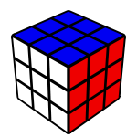

---
layout: default
title: SveKub
activeMenu: none
--- 
<div class="container margin-top">
    <div class="row">
        <div class="col-md-8">
            <div class="page-header"><h1>Välkommen till SveKub</h1></div>
            <p>SveKub är en hemsida för att organisera, informera och öka intresset kring tävlingar i Rubiks kub. 
                Om du kan lösa Rubiks Kub och vill tävla kan du hitta information om kommande tävlingar i Sverige. 
                Det finns inga krav förutom att du ska kunna lösa pusslet för att få vara med och tävla. På de flesta tävlingar 
                tävlas det i flera grenar och det är valfritt att ställa upp i de grenar du vill och med de pussel du kan lösa. 
                De flesta tävlingar är sanktionerade av <a href="http://www.worldcubeassociation.org" title="World Cube Association (WCA)">WCA</a>, 
                för det krävs det att tävlingen har en av WCA utsedd delegat och att <a href="https://www.worldcubeassociation.org/regulations/">WCAs regelverk</a> efterföljs. 
            </p>
            <hr>
        </div>
        <div class="col-md-4">
            <!--Panel-->
            <div class="card news-card margin-bottom">
                <div class="card-header primary-color white-text"><a href="Nyheter">Nyheter</a></div>
                <div class="card-block">
                    <ul>
                    {% for post in site.posts limit: 4 %}
                        <li><a class="card-link" href="{{ site.baseurl }}{{ post.url }}">{{ post.title }}</a></li>
                    {%endfor%}
                    </ul> 
                </div>
            </div>
            <!--/.Panel-->
        </div>
    </div>
    <div class="row">
        <div class="col-md-4">
            <h3>Rubiks Kub</h3>
            
            <p><a target="_blank" href="https://sv.wikipedia.org/wiki/Rubiks_kub">Rubiks Kub</a> är ett 3-dimensionellt pussel som uppfanns av Ernő Rubik 1974. 
                I början av 80-talet gick pusslet under namnet "Kuben" i Sverige och består av en kub uppdelad i 3x3 rutor. 
                Varje sida på kuben har en färg och målet är att vrida pusslets sidor så endast en färg var finns på kubens 6 sidor. 
            </p>
        </div>  
        <div class="col-md-4 margin-bottom">
            <h2 class="margin-bottom">Tävlingar</h2>
            <div class="list-group">
                <a class="list-group-item" href="https://www.worldcubeassociation.org/competitions/AFSwedishCubeOpen2016">ÅF Swedish Cube Open 15-16 oktober</a>
                <a class="list-group-item" href="https://www.worldcubeassociation.org/competitions/Kubvasan2016/">Kubvasan 2016 26-27 november</a>
            </div>
        </div>
        <div class="col-md-4">
            <div class="card news-card">
                <div class="card-header primary-color white-text"><span class="cubing-icon icon-333"></span> Speedcubing</div>
                <div class="card-block">
                    <p>
                        Speedcubing (Snabblösning) är en tävlingsform som syftar till att lösa Rubiks Kub och andra liknande pussel så snabbt som möjligt. 
                        Första världsmästerskapen arrangerades 1982 i Budapest och sedan 2003 är VM en tävling som återkommer vartannat år. 
                        Ett svenskt mästerskap har hållits varje år sedan 2005. 
                    </p>
                </div>
            </div>
        </div>
    </div>

    <div class="margin-top-bottom">
        {% include topnews.html %}
    </div>

    <div class="page-header">
        <h2 class="margin-bottom">Svenska rekord</h2>
    </div>
    <div class="row">
        <div class="col-md-6">
            <div class="panel panel-primary">
                <div class="card-header primary-color white-text">Singel</div>
                <table class="table records">
                    <tr><th>Gren</th><th>Namn</th><th>Resultat</th></tr>
                    <tr><td><span class="cubing-icon icon-333"> </span><span> Rubiks Kub</span></td><td>Daniel Wallin</td><td>6.45</td></tr>
                    <tr><td><span class="cubing-icon icon-444"> </span><span> 4x4x4</span></td><td>Nathaniel Berg</td><td>31.05</td></tr>
                    <tr><td><span class="cubing-icon icon-555"> </span><span> 5x5x5</span></td><td>Simon Westlund</td><td>1:03.11</td></tr>
                    <tr><td><span class="cubing-icon icon-222"> </span><span> 2x2x2</span></td><td>Mattias Uvesten</td><td>0.88</td></tr>
                    <tr><td><span class="cubing-icon icon-333bf"> </span><span> Rubiks Kub: Förbundna ögon</span></td><td>Tomas Kristiansson</td><td>46.18</td></tr>
                    <tr><td><span class="cubing-icon icon-333oh"> </span><span> Rubiks Kub: En hand</span></td><td>Joel Ulin</td><td>9.83</td></tr>
                    <tr><td><span class="cubing-icon icon-333fm"> </span><span> Rubiks Kub: Minst antal drag</span></td><td>Simon Westlund</td><td>27</td></tr>
                    <tr><td><span class="cubing-icon icon-333ft"> </span><span> Rubiks Kub: Fotlösning</span></td><td>Adam Körk</td><td>45.44</td></tr>
                    <tr><td><span class="cubing-icon icon-minx"> </span><span> Megaminx</span></td><td>Simon Westlund</td><td>42.28</td></tr>
                    <tr><td><span class="cubing-icon icon-pyram"> </span><span> Pyraminx</span></td><td>Mattias Uvesten</td><td>2.03</td></tr>
                    <tr><td><span class="cubing-icon icon-sq1"> </span><span> Square-1</span></td><td>Daniel Wallin</td><td>9.09</td></tr>
                    <tr><td><span class="cubing-icon icon-clock"> </span><span> Rubik's Clock</span></td><td>Nathaniel Berg</td><td>3.73</td></tr>
                    <tr><td><span class="cubing-icon icon-skewb"> </span><span> Skewb</span></td><td>Daniel Wallin</td><td>1.93</td></tr>
                    <tr><td><span class="cubing-icon icon-666"> </span><span> 6x6x6</span></td><td>Daniel Wallin</td><td>2:15.70</td></tr>
                    <tr><td><span class="cubing-icon icon-777"> </span><span> 7x7x7</span></td><td>Daniel Wallin</td><td>3:18.42</td></tr>
                    <tr><td><span class="cubing-icon icon-444bf"> </span><span> 4x4x4: Förbunda ögon</span></td><td>Mats Bergsten</td><td>5:45.88</td></tr>
                    <tr><td><span class="cubing-icon icon-555bf"> </span><span> 5x5x5: Förbunda ögon</span></td><td>Mats Bergsten</td><td>15:45.00</td></tr>
                    <tr><td><span class="cubing-icon icon-333mbf"> </span><span> 3x3x3: Flera kuber förbundna ögon</span></td><td>Tomas Kristiansson</td><td>19/21 59:47</td></tr>
                </table> 
          </div>
        </div>
        <div class="col-md-6">
            <div class="panel panel-primary">
                <div class="card-header primary-color white-text">Medel</div>
                <table class="table records">
                    <tr><th>Gren</th><th>Namn</th><th>Resultat</th></tr>
                    <tr><td><span class="cubing-icon icon-333"> </span><span> Rubiks Kub</span></td><td>Daniel Wallin</td><td>8.89</td></tr>
                    <tr><td><span class="cubing-icon icon-444"> </span><span> 4x4x4</span></td><td>Simon Westlund</td><td>36.27</td></tr>
                    <tr><td><span class="cubing-icon icon-555"> </span><span> 5x5x5</span></td><td>Simon Westlund</td><td>1:10.83</td></tr>
                    <tr><td><span class="cubing-icon icon-222"> </span><span> 2x2x2</span></td><td>Jakob Gunnarsson</td><td>1.96</td></tr>
                    <tr><td><span class="cubing-icon icon-333bf"> </span><span> Rubiks Kub: Förbundna ögon</span></td><td>Tomas Kristiansson</td><td>1:03.99</td></tr>
                    <tr><td><span class="cubing-icon icon-333oh"> </span><span> Rubiks Kub: En hand</span></td><td>Joel Ulin</td><td>12.87</td></tr>
                    <tr><td><span class="cubing-icon icon-333fm"> </span><span> Rubiks Kub: Minst antal drag</span></td><td>Erik Jernqvist</td><td>31.00</td></tr>
                    <tr><td><span class="cubing-icon icon-333ft"> </span><span> Rubiks Kub: Fotlösning</span></td><td>Adam Körk</td><td>50.73</td></tr>
                    <tr><td><span class="cubing-icon icon-minx"> </span><span> Megaminx</span></td><td>Simon Westlund</td><td>48.06</td></tr>
                    <tr><td><span class="cubing-icon icon-pyram"> </span><span> Pyraminx</span></td><td>Albin Xhemajlaj</td><td>3.07</td></tr>
                    <tr><td><span class="cubing-icon icon-sq1"> </span><span> Square-1</span></td><td>Daniel Wallin</td><td>11.94</td></tr>
                    <tr><td><span class="cubing-icon icon-clock"> </span><span> Rubik's Clock</span></td><td>Nathaniel Berg</td><td>6.21</td></tr>
                    <tr><td><span class="cubing-icon icon-skewb"> </span><span> Skewb</span></td><td>Daniel Wallin</td><td>3.31</td></tr>
                    <tr><td><span class="cubing-icon icon-666"> </span><span> 6x6x6</span></td><td>Daniel Wallin</td><td>2:19.86</td></tr>
                    <tr><td><span class="cubing-icon icon-777"> </span><span> 7x7x7</span></td><td>Daniel Wallin</td><td>3:29.56</td></tr>
                    <tr><td><span class="cubing-icon icon-444bf"> </span><span> 4x4x4: Förbunda ögon</span></td><td>-</td><td>-</td></tr>
                    <tr><td><span class="cubing-icon icon-555bf"> </span><span> 5x5x5: Förbunda ögon</span></td><td>-</td><td>-</td></tr>
                </table> 
            </div>
        </div>
    </div>
</div>
